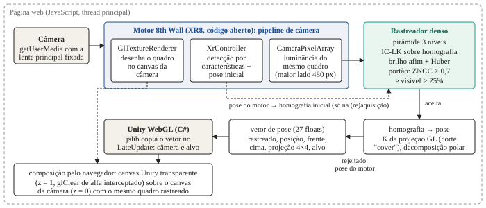
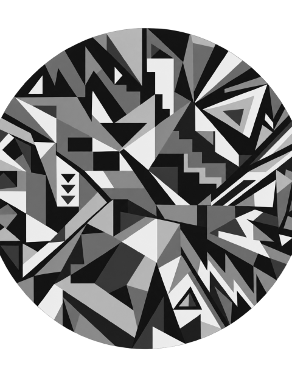
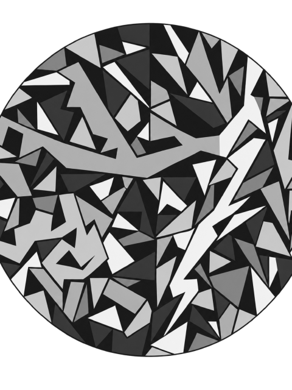
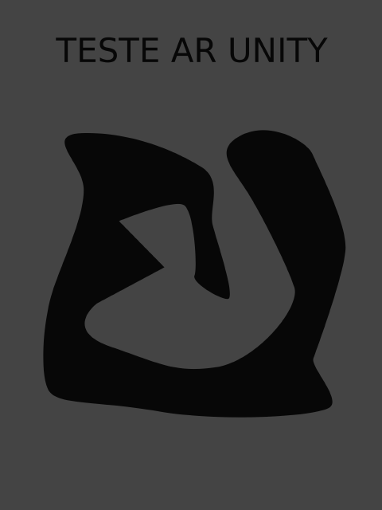
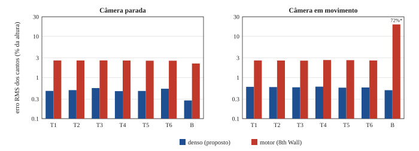
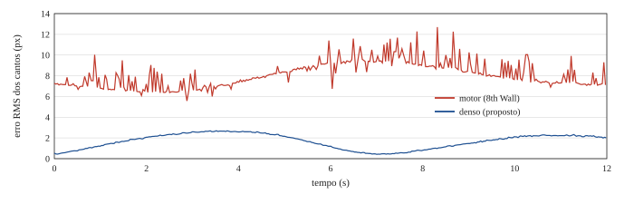
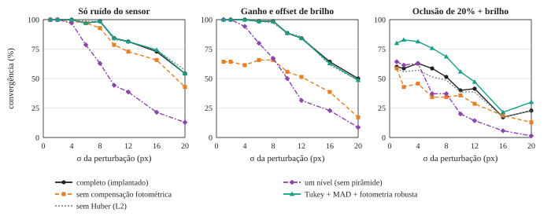

Abstract. Web-based augmented reality (WebAR) reaches users through a link, with no app to install, but image-target tracking in the browser usually relies on sparse keypoints matched on low-resolution frames, which leaves visible jitter and registration bias. We present a hybrid architecture in which an open-source engine (8th Wall) detects the target and estimates a coarse pose, and a dense direct aligner — inverse-compositional Lucas–Kanade on an 8-DoF homography, coarse to fine, with affine photometric compensation and robust weights — refines it on the very frame that is displayed. We derive the pixel intrinsics from the engine's GL projection under “cover” cropping, recover the 6-DoF pose from the homography by polar decomposition, and composite a Unity WebGL scene over the camera feed through a transparent canvas. In a reproducible in-browser benchmark with exact ground truth (7 targets, static and moving camera), the refinement lowered the RMS corner error from 2.6% to 0.50–0.58% of the target height and the frame-to-frame jitter about 30-fold, at 3.7–3.9 ms per frame in JavaScript; with a matched field of view, the error on the game posters fell to 0.08–0.12% (0.25–0.29 px). On a low-texture target in motion, the hybrid tracked 100% of the frames, against 72% for the engine alone. An ablation following the Baker–Matthews protocol shows that the pyramid and the photometric model are essential, that the Huber weights have negligible effect, and that a Tukey biweight with MAD scale raises convergence under 20% occlusion from 60% to 80%.
Resumo. A realidade aumentada na Web (WebAR) chega ao usuário por um link, sem instalação, mas o rastreamento de imagens no navegador costuma depender de pontos-chave esparsos casados em quadros de baixa resolução, o que deixa tremor visível e viés de registro. Apresentamos uma arquitetura híbrida em que um motor de código aberto (8th Wall) detecta o alvo e estima uma pose inicial, e um alinhador denso direto — Lucas–Kanade inverso-composicional sobre uma homografia de 8 graus de liberdade, em pirâmide, com compensação fotométrica afim e pesos robustos — a refina no mesmo quadro que é exibido. Derivamos os intrínsecos em pixels a partir da projeção GL do motor sob corte “cover”, recuperamos a pose de 6 graus de liberdade da homografia por decomposição polar e compomos uma cena Unity WebGL sobre a imagem da câmera por um canvas transparente. Em um banco de testes reprodutível no navegador, com verdade de campo exata (7 alvos, câmera parada e em movimento), o refinamento reduziu o erro RMS dos cantos de 2,6% para 0,50–0,58% da altura do alvo e o tremor entre quadros em cerca de 30 vezes, a 3,7–3,9 ms por quadro em JavaScript; com campo de visão casado, o erro nos cartazes do jogo caiu para 0,08–0,12% (0,25–0,29 px). Em um alvo de baixa textura em movimento, o sistema híbrido rastreou 100% dos quadros, contra 72% do motor sozinho. Uma ablação no protocolo de Baker e Matthews mostra que a pirâmide e o modelo fotométrico são essenciais, que os pesos de Huber têm efeito desprezível e que o estimador biquadrado de Tukey com escala MAD eleva a convergência sob 20% de oclusão de 60% para 80%.
Palavras-chave: realidade aumentada na Web; rastreamento planar; Lucas–Kanade; alinhamento direto; homografia; Unity WebGL.
Jogos de realidade aumentada (RA) baseados em localização mostraram que sobrepor conteúdo virtual ao ambiente físico pode engajar grandes públicos [Paavilainen et al. 2017]. Para experiências em espaços físicos delimitados — um campus, um museu, um evento —, a RA na Web (WebAR) é especialmente atraente: o usuário aponta a câmera para um QR code ou abre um link, e a experiência roda no navegador, sem instalação [Qiao et al. 2019]. Em contrapartida, o navegador impõe restrições severas: acesso à câmera mediado por APIs de vídeo, orçamento de processamento compartilhado com a página e com o motor gráfico, quadros reduzidos para análise e, até o momento desta escrita, ausência de suporte amplo e multiplataforma ao rastreamento de imagens pela WebXR Device API [W3C 2022].
Na prática, o rastreamento de alvos planares (cartazes, cartas, embalagens) na Web é oferecido por SDKs comerciais licenciados e por bibliotecas abertas como AR.js e MindAR. Em 2026, o motor do 8th Wall foi disponibilizado como código aberto sob licença MIT [Niantic Spatial 2026], tornando acessível um pipeline completo de câmera, detecção de alvos e estimação de pose para o navegador. Esses sistemas seguem, em essência, o paradigma de características esparsas: detectar pontos-chave, casá-los com um modelo do alvo e estimar a pose de forma robusta [Lowe 2004; Rublee et al. 2011; Wagner et al. 2010]. Em quadros de cerca de 480 pixels no maior lado e com poucas centenas de correspondências, a posição quantizada dos pontos e a variação do conjunto casado entre quadros produzem tremor (jitter) e viés de registro, que são perceptíveis em RA [Azuma 1997; Holloway 1997]. Há ainda um problema de sincronização: se a pose é calculada sobre um quadro diferente do que está na tela, o conteúdo virtual “desliza” sobre o alvo.
Este trabalho propõe e avalia uma arquitetura híbrida para WebAR que mantém o motor aberto para aquilo em que métodos esparsos são bons — detectar o alvo em qualquer pose e escala, sem estimativa prévia — e acrescenta um refinamento denso e direto para aquilo em que eles são fracos: precisão e estabilidade quadro a quadro. O refinamento é um alinhamento Lucas–Kanade inverso-composicional [Lucas e Kanade 1981; Baker e Matthews 2004] sobre uma homografia, executado em JavaScript sobre a cópia em luminância do mesmo quadro que o motor desenha na tela. Como usa milhares de pixels com gradiente, em vez de algumas centenas de pontos, o alinhamento atinge precisão sub-pixel e continua funcionando em artes de pouca textura. Um portão de confiança por correlação cruzada normalizada decide, a cada quadro, entre a pose refinada e a pose do motor.
As contribuições são:
O sistema está em uso em um jogo de coleção de criaturas em um campus universitário (PUCmon), no qual cada cartaz afixado em uma parede faz surgir uma criatura em 3D.
Os primeiros sistemas de RA de grande difusão usavam marcadores fiduciais quadrados [Kato e Billinghurst 1999]. O rastreamento de características naturais permitiu usar imagens arbitrárias como alvo, a partir de detectores e descritores como SIFT [Lowe 2004], FAST [Rosten e Drummond 2006] e ORB [Rublee et al. 2011]; o levantamento de Lepetit e Fua [2005] organiza as abordagens baseadas em modelo. Wagner et al. [2010] mostraram em celulares a combinação que inspira este trabalho: um detector por características para (re)inicialização e um rastreador de patches mais barato e preciso entre quadros. PTAM [Klein e Murray 2007] separou rastreamento e mapeamento em threads distintas. Nosso foco é o caso planar com alvo conhecido, sem mapeamento, mas executado inteiramente no navegador.
O alinhamento direto minimiza diferenças de intensidade em vez de distâncias entre pontos. Desde Lucas e Kanade [1981], a formulação foi estendida a modelos paramétricos de geometria e iluminação, com tratamento de oclusões [Hager e Belhumeur 1998]. Baker e Matthews [2004] unificaram as variantes e mostraram que a forma inverso-composicional (IC) permite pré-calcular as imagens de descida mais íngreme e, sem pesos, a própria Hessiana. A minimização de segunda ordem eficiente (ESM) [Benhimane e Malis 2004] amplia a bacia de convergência no rastreamento de planos. Estimadores M robustos [Huber 1964; Black e Anandan 1996], incluindo o biquadrado de Tukey [Beaton e Tukey 1974], reduzem a influência de pixels discrepantes. Métodos diretos também sustentam sistemas densos e semi-densos de SLAM [Newcombe et al. 2011; Engel et al. 2014].
Para um plano observado por uma câmera calibrada, a homografia determina a pose a menos de escala [Zhang 2000; Hartley e Zisserman 2004]; Malis e Vargas [2007] analisam a decomposição, e o IPPE [Collins e Bartoli 2014] trata a ambiguidade de poses planares a partir de correspondências. Com intrínsecos conhecidos e o plano à frente da câmera, a solução é única; o passo delicado é projetar as colunas estimadas, contaminadas por ruído e por erro de intrínsecos, na rotação mais próxima, o que fazemos pela iteração de Newton da decomposição polar [Higham 1986].
Qiao et al. [2019] discutem os desafios da WebAR: desempenho, acesso a sensores e fragmentação entre navegadores. WebAssembly [Haas et al. 2017] e compiladores como o Emscripten [Zakai 2011] permitem rodar motores nativos no navegador; é assim que o Unity gera builds WebGL. Bibliotecas abertas como AR.js [AR.js] e MindAR [MindAR] oferecem marcadores e alvos de imagem. Até onde sabemos, não há na literatura uma avaliação com verdade de campo do refinamento denso de alvos de imagem no navegador, nem da integração dessa pose a um motor de jogos compilado para WebGL.
A Figura 1 resume a arquitetura. A câmera é aberta por getUserMedia e entregue ao pipeline do motor, composto por três módulos em ordem: GlTextureRenderer, que desenha o quadro no canvas da câmera; XrController, que detecta os alvos e estima suas poses; e CameraPixelArray, que copia para a CPU a luminância do quadro processado, reduzida a 480 pixels no maior lado. Como os três operam sobre o mesmo quadro, o rastreador denso alinha exatamente a imagem que o usuário vê — propriedade que verificamos com marcas de identificação nos quadros (Seção 4.1). A pose resultante é escrita em um vetor de 27 números lido pelo Unity a cada quadro, e o navegador compõe o canvas transparente do Unity sobre o canvas da câmera.

Cada alvo é a imagem de um cartaz. No build, o seu recorte em luminância (no formato da ferramenta de alvos do motor: 480 × 640 pixels, proporção 3:4) é gravado junto com a posição do recorte no cartaz original. O rastreador reamostra esse recorte para 240 pixels de altura por média exata de área e endereça o modelo T em coordenadas normalizadas, independentes do nível da pirâmide:
em que (x, y) é o centro de um pixel no recorte original de W × H pixels. A transformação procurada é uma homografia G que leva a pixels do quadro. O cartaz inteiro define o sistema de coordenadas do conteúdo virtual (origem no centro, 2 unidades de altura), e uma transformação afim A, obtida dos metadados do recorte, leva as coordenadas normalizadas do recorte às do cartaz.
Modelo de deformação. Usamos a parametrização de Baker e Matthews [2004] para a homografia incremental:
Pontos do modelo. Em cada nível da pirâmide do modelo, selecionamos os pixels com gradiente acima de 2 níveis de cinza por pixel, longe da borda, e os rarefazemos uniformemente até 2400, 1200 e 600 pontos (do nível mais fino ao mais grosso). Para cada ponto k, com coordenadas (u, v) e gradiente (gx, gy) expresso por unidade normalizada, pré-calculamos a linha da imagem de descida mais íngreme, isto é, o gradiente do modelo vezes o jacobiano da deformação em p = 0:
Compensação fotométrica. A cada iteração, amostramos o quadro I por interpolação bilinear nos pontos deformados e ajustamos por mínimos quadrados um modelo afim de brilho e contraste I ≈ aT + b, com solução fechada a = cov(T, I)/var(T) e b = Ī − aT̄. O resíduo de cada ponto compara a intensidade corrigida com o modelo:
em que π é a desomogeneização. O mesmo ajuste fornece o escore de correlação cruzada normalizada de média zero (ZNCC) [Lewis 1995] entre T e I sobre os pontos visíveis, usado como medida de confiança.
Pesos robustos e passo de Gauss–Newton. Cada ponto recebe peso de Huber wk = 1 se |ek| ≤ c e wk = c/|ek| caso contrário, com c = 1,5 · √(π/2) · média(|e|) — o fator √(π/2) converte o desvio absoluto médio no desvio-padrão de uma gaussiana. O incremento e a atualização inverso-composicional são
Como os pesos mudam a cada iteração, a Hessiana 8 × 8 é reacumulada (custo O(64n) para n pontos), mas as imagens de descida mais íngreme continuam pré-calculadas, que é o principal ganho da forma IC. O sistema é resolvido por eliminação gaussiana com pivoteamento parcial. Cada nível faz no máximo 12 iterações e para quando max|Δpi| < 10−4.
Pirâmides e escolha de nível. Quadro e modelo passam pelos mesmos filtros: suavização binomial separável [1 4 6 4 1]/16 [Burt e Adelson 1983] e redução 2 × 2 por média, em 3 níveis. A suavização alarga as bordas, o que amplia a bacia de convergência, e aproxima o modelo da imagem opticamente borrada da câmera. Para cada nível do modelo, o nível do quadro é escolhido pela escala corrente: L = round(log2 s), em que s é o número de pixels do quadro por pixel do modelo, estimado pela imagem do eixo vertical do alvo sob G. Assim, alvos pequenos ou distantes são comparados em resoluções equivalentes, sem aliasing.
Intrínsecos do quadro de análise. O motor fornece uma matriz de projeção GL P para o canvas exibido, de wc × hc pixels, enquanto o rastreador trabalha no quadro da CPU, de wf × hf pixels, que é escalado para cobrir o canvas (corte “cover”). Com s = max(wc/wf, hc/hf) pixels de canvas por pixel de quadro,
Pose → homografia. Na (re)aquisição, a pose do motor (posição t e eixos r1, r2 do cartaz no referencial da câmera, convertidos da convenção do Unity, com eixo y para cima, para a convenção de visão computacional, com y para baixo) gera a estimativa inicial
Homografia → pose. Após o alinhamento, M = K−1GA−1 = λ[r1 r2 t]. Tomamos λ = ±(‖m1‖ + ‖m2‖)/2, com o sinal escolhido para que o cartaz fique à frente da câmera (tz > 0), normalizamos m̂i = mi/λ e partimos de R0 = [m̂1 m̂2 m̂1 × m̂2]. A rotação mais próxima vem da iteração de Newton para o fator polar [Higham 1986]:
com 8 iterações, que convergem quadraticamente a partir de R0, já próxima de uma rotação. A pose é devolvida ao Unity na convenção dele: posição, vetor “frente” (normal do cartaz) e vetor “cima”.
Um ponto merece destaque: sobre o plano do cartaz, G é reproduzida exatamente por qualquer K usado tanto na decomposição quanto na renderização; é a ortonormalização (8) que torna o resultado sensível a erros de intrínsecos. A Seção 5.2 quantifica esse efeito.
O Algoritmo 1 resume o laço executado a cada quadro. O rastreador segue o alvo a partir do seu próprio alinhamento no quadro anterior; só recorre à pose do motor para adquirir ou readquirir o alvo. Um alinhamento é aceito se ZNCC > 0,7 e se mais de 25% dos pontos caem dentro do quadro. A última homografia aceita é mantida por 500 ms após uma falha (desfoque de movimento, um dedo sobre o cartaz), e a última pose é mantida por 250 ms antes de o alvo ser dado como perdido, o que evita piscadas do conteúdo. Há um alvo ativo por vez: o seguido permanece até ser perdido.
onUpdate do pipeline do motor).Ponte de pose. A página mantém um Float32Array de 27 posições: estado, posição (3), frente (3), cima (3), projeção 4 × 4 (16) e índice do alvo. Uma biblioteca JavaScript do Unity (.jslib) copia o vetor para a memória do WebAssembly no LateUpdate, e o componente C# aplica a projeção à câmera virtual e posiciona o alvo correspondente. Como o plano distante da projeção do motor é infinito, a página o substitui por um finito, para que o recorte e a profundidade do Unity funcionem. Não há cópia de vídeo para texturas do Unity.
Composição transparente. O canvas do Unity fica acima do canvas da câmera, com contexto WebGL de alfa pré-multiplicado, e a câmera do Unity limpa a tela com cor transparente. O runtime WebGL do Unity, porém, termina cada quadro com uma limpeza apenas do canal alfa para 1, o que tornaria o canvas opaco. A biblioteca intercepta glClear e ignora as limpezas cuja máscara de escrita de cor é só alfa; o navegador então compõe os dois canvases, e o quadro da câmera exibido é o mesmo que foi rastreado.
Pipeline de build. Um processador de build do editor percorre as cenas incluídas, coleta as imagens dos componentes de alvo e grava os recortes em luminância e um targets.json no formato da ferramenta do motor. Como o Unity pula o processamento de cenas inalteradas em builds incrementais, as listas de imagens são mantidas em um cache por cena, e o diretório de alvos é recriado a cada build, o que evita alvos obsoletos.
Seleção de lente e ciclo de vida. Em celulares com várias câmeras traseiras, pedir a câmera por facingMode pode abrir a ultra-angular, ou, em alguns iPhones, uma câmera virtual que alterna de lente ao se aproximar do alvo, mudando os intrínsecos no meio da sessão. Escolhemos a lente principal pelos rótulos de enumerateDevices: no Android, o sensor “camera2 0, facing back”; no iOS, sem depender do idioma, a palavra que identifica as traseiras (a mais frequente que não está em todos os rótulos) e, entre elas, o rótulo com menos qualificadores. O deviceId escolhido é então fixado em todas as chamadas a getUserMedia. Ao sair da cena de RA, o motor é pausado em vez de encerrado, porque reiniciá-lo pediria de novo, fora de um gesto do usuário, permissões de sensores que o iOS recusa.
No PUCmon, cada cartaz traz uma criatura que emerge de um “buraco” na parede. O efeito usa a técnica de objetos fantasmas [Breen et al. 1996]: uma superfície invisível que só escreve profundidade oculta as partes da criatura atrás da parede, exceto na abertura, de modo que ela parece sair do cartaz. O jogo inclui contas de usuário, coleção e um minijogo de captura; a pose precisa e estável é o que sustenta a ilusão de que a criatura está presa à parede.
Medir o erro de registro em RA exige saber onde o alvo realmente está em cada quadro exibido. Construímos uma câmera sintética que substitui getUserMedia por um fluxo de canvas (captureStream, 30 quadros/s). A cada quadro, uma cena WebGL2 desenha o cartaz, com textura em mipmap, sobre uma mesa texturizada, com projeção perspectiva de 720 × 1280 pixels e campo de visão vertical de 65°. São somados ruído uniforme de ±0,06 por pixel (σ ≈ 8,8 níveis de cinza) e um tremor de mão aleatório (±0,002 rad e ±0,012 unidade por quadro). O identificador do quadro é gravado em 12 quadrados binários no canto da imagem; um módulo no pipeline do motor o decodifica da cópia em CPU do quadro processado. Com isso, a verdade de campo usada em cada medida é a pose do quadro efetivamente exibido, o que elimina a latência como fator de confusão e mede o registro como o usuário o vê.
Medidas. Projetamos na tela — em pixels CSS de uma janela móvel de 375 × 812 com densidade 2 — os quatro cantos do cartaz e um ponto 3D meia altura à frente do seu centro, que representa o conteúdo virtual, tanto pela pose verdadeira quanto pela pose publicada para o Unity (com a mesma projeção que o Unity usa). As métricas por execução são: erro RMS dos cantos (em pixels e em % da altura do cartaz na tela) e seu percentil 90; erro do ponto 3D; viés (RMS, entre cantos, do vetor de erro médio de cada canto) e ruído (RMS em torno dessa média); tremor (RMS da variação do vetor de erro dos cantos entre quadros exibidos consecutivos, isto é, o quanto o conteúdo treme); fração de amostras rastreadas; tempo de aquisição, do alvo entrar em vista ao início de uma trava contínua de pelo menos 1,5 s (resolução de 100 ms); e o tempo do passo denso por quadro, incluindo a construção da pirâmide.
Condições. Motor: o alinhador é desligado (devolve escore nulo) e a pose publicada é a do motor. Denso: sistema completo. Regimes. Parada: inclinação de 34°, guinada de 9°, rolagem de 6°, distância de 4,5 unidades (cartaz de 2 unidades de altura), por 6 s. Movimento: trajetória determinística com frequências incomensuráveis (inclinações de até 40°, rolagem de até 26°, deslocamento lateral, distância entre 3,3 e 5,7 unidades); o alvo é adquirido parado na pose inicial e então 12 s idênticos da trajetória são medidos em todas as execuções. Alvos (Figura 2): T1–T6, os cartazes do jogo (mosaicos geométricos de alto contraste); e B, um alvo de baixa textura (uma forma escura sobre fundo cinza liso). Plataforma: AMD Ryzen 5 5500, Radeon RX 7600 e 16 GB de RAM, Windows 11, navegador baseado no Chromium 152 em emulação de dispositivo móvel; build WebGL do Unity 2022.3.

T1
T4
BPara isolar os componentes do alinhador, seguimos o protocolo de Baker e Matthews [2004] em Node.js 24, com a pirâmide, a seleção de pontos e o laço de níveis do rastreador implantado; a iteração foi reimplementada com chaves que ligam e desligam cada componente, e a variante completa reproduz a implantada. Para cada tentativa, sorteamos uma homografia (inclinações de até ±40°, rolagem de até ±26°, cartaz com 110 a 260 pixels de altura num quadro de 270 × 480, a resolução de análise de uma câmera de 720 × 1280, campo de visão vertical de 65°) e renderizamos o alvo com superamostragem 2 × 2, fundo texturizado e ruído gaussiano de σ = 3 níveis de cinza. Há três cenários: só ruído; brilho, com ganho em U(0,5; 1,4) e deslocamento em U(−40; 40); e oclusão, com o mesmo brilho e uma faixa uniforme de intensidade 200 cobrindo 20% da área do cartaz. Os quatro cantos verdadeiros são perturbados por ruído gaussiano de desvio σ ∈ {1, 2, 4, 6, 8, 10, 12, 16, 20} pixels, e a homografia inicial é obtida por DLT. Uma tentativa converge se o erro RMS final dos cantos é menor que 1 pixel. Também registramos a aceitação pelo portão (ZNCC > 0,7) e as falsas aceitações (aceito com erro maior que 3 pixels). São 70 tentativas por célula (10 por alvo), com sementes fixas. Além das variantes que removem componentes, avaliamos três alternativas robustas não implantadas: escala de Huber pela mediana dos resíduos (MAD) [Rousseeuw e Croux 1993]; ajuste fotométrico ponderado pelos pesos robustos da iteração anterior; e o estimador biquadrado de Tukey [Beaton e Tukey 1974], com w = (1 − (e/c)2)2 para |e| < c, w = 0 caso contrário, e c = 4,685 · 1,4826 · med|e|.
A Tabela 1 agrega os seis cartazes do jogo, e a Figura 3 mostra cada alvo. Com a câmera parada, o refinamento denso reduziu o erro RMS dos cantos de 2,59% para 0,50% da altura do cartaz (5,2 vezes) e, em movimento, de 2,61% para 0,58% (4,5 vezes). O ponto 3D, que representa o conteúdo virtual fora do plano, teve redução de 2,7 vezes (parada) e 3,4 vezes (movimento). A diferença mais visível para o usuário está no tremor: 2,73 px contra 0,09 px com a câmera parada e 3,16 px contra 0,10 px em movimento, cerca de 30 vezes menos. O refinamento foi melhor em todos os 7 alvos nos dois regimes (teste exato de postos sinalizados de Wilcoxon, n = 7, p = 0,016 em cada regime).
Tabela 1. Erro de registro nos cartazes T1–T6 (média ± desvio-padrão entre os 6 alvos). Pixels CSS; altura mediana do cartaz na tela: ≈ 238 px (parada) e ≈ 301 px (movimento). Tempo: média do passo denso por quadro (maior p95 entre os alvos).
| Regime | Condição | Cantos | Ponto 3D (px) | Tremor (px) | Viés (px) | Ruído (px) | Tempo (ms) | ||
|---|---|---|---|---|---|---|---|---|---|
| RMS (px) | RMS (%) | p90 (px) | |||||||
| parada | denso | 1,19 ± 0,09 | 0,50 ± 0,04 | 1,23 ± 0,09 | 1,79 ± 0,24 | 0,09 ± 0,02 | 1,18 ± 0,09 | 0,07 ± 0,01 | 3,9 (5,6) |
| parada | motor | 6,14 ± 0,04 | 2,59 ± 0,02 | 6,74 ± 0,06 | 4,76 ± 0,14 | 2,73 ± 0,35 | 5,91 ± 0,03 | 1,66 ± 0,14 | — |
| movimento | denso | 1,80 ± 0,04 | 0,58 ± 0,01 | 2,62 ± 0,04 | 2,28 ± 0,04 | 0,10 ± 0,00 | 1,21 ± 0,06 | 1,33 ± 0,04 | 3,7 (5,3) |
| movimento | motor | 8,26 ± 0,09 | 2,61 ± 0,03 | 9,82 ± 0,32 | 7,69 ± 0,23 | 3,16 ± 0,46 | 7,29 ± 0,03 | 3,88 ± 0,20 | — |

A decomposição em viés e ruído explica a diferença. No motor, o erro é dominado por um viés sistemático (5,9 px parado): os quatro cantos erram para fora, e a sobreposição fica cerca de 2,6% maior que o cartaz em todos os alvos. Somam-se a isso um ruído de 1,7 px (parado) a 3,9 px (movimento) e o tremor correspondente. No denso, o ruído com a câmera parada é de 0,07 px — praticamente o limite imposto pelo tremor simulado da mão — e o viés restante, de cerca de 1,2 px, tem outra origem, examinada na Seção 5.2. A Figura 4 mostra a evolução temporal em movimento: o erro do motor oscila entre 6 e 12 px de um quadro para o outro, enquanto o denso varia suavemente com a pose.

O modelo de lente do sistema — a projeção que o motor fornece ou, na falta dela, a lente típica padrão da página — assumiu um campo de visão vertical de 63°, enquanto a câmera sintética tinha 65°, um descasamento de cerca de 3% na distância focal, comparável à variação entre aparelhos reais. Para testar se o viés residual do denso vinha desse descasamento, repetimos execuções com a câmera sintética a 63° (Tabela 2). Com a lente casada, o erro do denso caiu de 1,12 para 0,25 px no alvo T1 parado (0,10% da altura) e para 0,27 px em movimento (0,08%), enquanto o do motor permaneceu em 2,6% — ou seja, o viés do motor não decorre da lente. Isso confirma que o alinhamento em si é sub-pixel e que, nesse nível de precisão, o erro dominante passa a ser a calibração.
Tabela 2. Controle de intrínsecos. Erro RMS dos cantos em px (e em % da altura do cartaz) e erro do ponto 3D em px, com a câmera sintética a 65° (descasada) e a 63° (casada com o modelo de lente do sistema).
| Alvo | Regime | Condição | Câmera a 65° | Câmera a 63° | ||
|---|---|---|---|---|---|---|
| Cantos | Ponto 3D | Cantos | Ponto 3D | |||
| T1 | parada | denso | 1,12 (0,47%) | 1,61 | 0,25 (0,10%) | 0,44 |
| T1 | parada | motor | 6,17 (2,60%) | 4,85 | 6,52 (2,64%) | 5,74 |
| T4 | parada | denso | 1,11 (0,47%) | 1,56 | 0,29 (0,12%) | 0,54 |
| B | parada | denso | 0,66 (0,28%) | 0,84 | 0,52 (0,21%) | 1,45 |
| T1 | movimento | denso | 1,83 (0,59%) | 2,25 | 0,27 (0,08%) | 0,46 |
| T1 | movimento | motor | 8,20 (2,60%) | 7,55 | 8,83 (2,67%) | 9,80 |
No alvo B parado, o motor rastreou todos os quadros, com 2,19% de erro, contra 0,28% do denso. Em movimento, o motor rastreou apenas 71,9% das amostras e, mesmo quando rastreava, produziu poses grosseiramente erradas (erro dos cantos de 64 px, p90 de 77 px, e 277 px no ponto 3D). Com o refinamento, B foi rastreado em 100% das amostras, com 1,49 px (0,49%). O mecanismo é a política da Seção 3.5: depois da aquisição, o alinhador segue o alvo a partir do seu próprio alinhamento anterior, sem depender da detecção quadro a quadro do motor, e usa todos os pixels com gradiente — as bordas da forma e do texto —, enquanto o motor dispõe de poucos pontos-chave distintivos nessa arte. Observamos também que, no movimento, a aquisição inicial de B pelo motor depende fortemente da pose: em algumas posições da trajetória, ela levou mais de 15 s.
O passo denso custou em média 3,7–3,9 ms por quadro (p95 ≤ 5,6 ms) em JavaScript na thread principal, cerca de 11–12% do orçamento de um quadro a 30 quadros/s na máquina de teste. O tempo de aquisição, determinado pela detecção do motor, teve mediana de 402 ms (203–747 ms) nas 28 execuções. A média foi de 423 ms com o refinamento e de 343 ms sem ele; a diferença, de 2 a 3 quadros, está dentro da variação entre execuções (desvio-padrão de 50 a 140 ms por condição e regime).
A Figura 5 e a Tabela 3 resumem a ablação. A pirâmide é o componente mais importante para a bacia de convergência: sem ela, a convergência a σ = 8 px cai de 99% para 63%, e a 12 px, de 81% para 39%. A compensação fotométrica é indispensável sob mudanças de brilho: sem ela, a convergência fica entre 61% e 66% mesmo com perturbações de 1–8 px, e as falsas aceitações chegam a 8,6% sob oclusão. Os pesos de Huber, por outro lado, tiveram efeito desprezível em todos os cenários (por exemplo, 60% contra 59% de convergência a σ = 1 px sob oclusão). Calcular a escala pela mediana não mudou o resultado; ponderar o ajuste fotométrico ajudou pouco (60% para 67%). Já o estimador de Tukey com escala MAD e fotometria ponderada elevou a convergência sob oclusão de 60% para 80% (σ = 1 px) e a média sobre todos os σ de 45,9% para 60,3%, sem perda nos outros cenários, ao custo de ordenar os resíduos (tempo mediano de 4,9 ms contra 2,8 ms por alinhamento no Node.js). A interpretação é que o Huber limita, mas não anula, a influência de cada pixel discrepante: com 20% de pixels ocluídos, a soma dessas influências ainda desloca a solução, enquanto um estimador que as zera (redescendente) as descarta.
Os dados mostram também que o portão de confiança é conservador sob oclusão: a σ = 1 px, apenas 36% das tentativas foram aceitas, embora 60% tenham convergido, porque o ZNCC é calculado sobre todos os pontos, inclusive os ocluídos. No sistema, essas rejeições são absorvidas pela manutenção da homografia por 500 ms e pela pose do motor. A bacia medida também é compatível com o papel atribuído ao motor: o erro típico da sua pose (≈ 2,6% da altura do cartaz, ou 3–7 px no quadro de análise) fica dentro da faixa em que o alinhador converge em 97–100% das tentativas.

Tabela 3. Ablação: convergência (%) a σ = 4 e 12 px e média sobre todos os σ, por cenário; aceitação pelo portão sob oclusão a σ = 1 px; tempo mediano por alinhamento no Node.js (ms).
| Variante | Só ruído | Brilho | Oclusão 20% | Aceito (%) | ms | ||||||
|---|---|---|---|---|---|---|---|---|---|---|---|
| 4 | 12 | média | 4 | 12 | média | 4 | 12 | média | |||
| completo (implantado) | 100 | 81 | 87,6 | 100 | 84 | 87,1 | 63 | 41 | 45,9 | 36 | 2,8 |
| sem compensação fotométrica | 99 | 73 | 83,2 | 61 | 51 | 53,8 | 46 | 29 | 34,6 | 37 | 4,2 |
| sem Huber (L2 puro) | 100 | 81 | 88,1 | 100 | 86 | 86,7 | 57 | 39 | 43,2 | 36 | 2,3 |
| um nível (sem pirâmide) | 97 | 39 | 61,7 | 94 | 31 | 61,6 | 63 | 14 | 33,8 | 40 | 3,0 |
| Huber, escala pela mediana (MAD) | 100 | 81 | 87,6 | 100 | 83 | 87,0 | 63 | 41 | 46,2 | 36 | 4,1 |
| Huber-MAD + fotometria ponderada | 100 | 81 | 87,6 | 100 | 86 | 87,1 | 63 | 44 | 48,7 | 36 | 4,3 |
| Tukey + MAD + fotometria ponderada | 100 | 81 | 87,8 | 100 | 84 | 86,8 | 81 | 47 | 60,3 | 40 | 4,9 |
Por que o refinamento funciona. O alinhamento denso usa milhares de pixels com interpolação sub-pixel, e o ruído de cada um se dilui na média; os métodos esparsos dependem de poucas centenas de posições de pontos-chave quantizadas e de um conjunto de correspondências que muda a cada quadro. Além disso, o alinhamento é feito diretamente contra a imagem do alvo, o que remove o viés sistemático do caminho do motor sem que precisemos identificar a sua causa. O ganho de estabilidade é o mais relevante para a experiência: um tremor de 3 px em um cartaz de 300 px é perceptível, e um de 0,1 px dificilmente o é.
Calibração como novo gargalo. Uma vez que o registro no plano é sub-pixel, o erro residual passa a ser dominado pelo modelo de lente (Tabela 2). Isso indica que ganhos adicionais virão de intrínsecos por aparelho (tabelas por modelo) ou de autocalibração a partir das próprias homografias rastreadas [Zhang 2000]. Para conteúdo estritamente planar, a homografia pode ser usada diretamente na renderização, o que dispensa a ortonormalização e a torna imune a esse erro.
Robustez. O resultado com Tukey indica uma melhoria simples e de baixo risco para o sistema implantado, a ser acompanhada de um escore de confiança robusto (por exemplo, ZNCC só sobre os pontos com peso não nulo), para que o portão não descarte alinhamentos corretos sob oclusão parcial.
Limitações e ameaças à validade. (i) A câmera é sintética: não modela desfoque de movimento, rolling shutter, foco e exposição automáticos, distorção radial nem compressão de vídeo; a validação em aparelhos reais, com verdade de campo física, é o próximo passo. (ii) Os tempos foram medidos em um processador de desktop; CPUs de celulares são várias vezes mais lentas, e o orçamento deve ser revalidado, possivelmente movendo o alinhador para WebAssembly com SIMD ou para um Web Worker. (iii) O viés do caminho do motor inclui tanto a estimação do motor quanto a conversão de coordenadas do alvo feita pela página, e não isolamos as duas contribuições; o tremor, insensível a vieses constantes, não é afetado por essa ressalva. (iv) Usamos uma única trajetória de movimento e um conjunto pequeno de alvos, dos quais seis com estilo visual semelhante. (v) Não há estudo com usuários sobre a estabilidade percebida.
Mostramos que um refinamento denso inverso-composicional, executado em JavaScript sobre o mesmo quadro exibido, transforma a pose de um motor de WebAR aberto em um registro sub-pixel e estável, com custo de poucos milissegundos por quadro. Ele reduziu o erro de registro de 4,5 a 5,2 vezes, o tremor em cerca de 30 vezes e manteve o rastreamento de um alvo de baixa textura em que o motor sozinho falhava. Com o modelo de lente correto, o erro caiu a cerca de 0,1% da altura do alvo. A integração com o Unity WebGL por composição transparente permite usar esse rastreamento em jogos completos distribuídos por um link, como o jogo de campus que motivou o trabalho. Como próximos passos, propomos a validação em aparelhos reais, o estimador de Tukey com portão robusto e a estimação dos intrínsecos por aparelho.
O código do sistema, os scripts do banco de testes e os dados brutos das execuções estão disponíveis em [URL do repositório]. O desenvolvimento do sistema, a execução dos experimentos e a redação deste manuscrito contaram com o auxílio de um assistente de IA generativa (Claude, da Anthropic), sob a supervisão do autor, que revisou o conteúdo e assume a responsabilidade por ele.
AR.js. AR.js — Augmented Reality on the Web. Software de código aberto. Disponível em: https://github.com/AR-js-org/AR.js. Acesso em: out. 2026.
Azuma, R. T. (1997). A survey of augmented reality. Presence: Teleoperators and Virtual Environments, 6(4):355–385.
Baker, S. e Matthews, I. (2004). Lucas-Kanade 20 years on: A unifying framework. International Journal of Computer Vision, 56(3):221–255.
Beaton, A. E. e Tukey, J. W. (1974). The fitting of power series, meaning polynomials, illustrated on band-spectroscopic data. Technometrics, 16(2):147–185.
Benhimane, S. e Malis, E. (2004). Real-time image-based tracking of planes using efficient second-order minimization. In IEEE/RSJ International Conference on Intelligent Robots and Systems (IROS), p. 943–948.
Black, M. J. e Anandan, P. (1996). The robust estimation of multiple motions: Parametric and piecewise-smooth flow fields. Computer Vision and Image Understanding, 63(1):75–104.
Breen, D. E., Whitaker, R. T., Rose, E. e Tuceryan, M. (1996). Interactive occlusion and automatic object placement for augmented reality. Computer Graphics Forum, 15(3):11–22.
Burt, P. J. e Adelson, E. H. (1983). The Laplacian pyramid as a compact image code. IEEE Transactions on Communications, 31(4):532–540.
Collins, T. e Bartoli, A. (2014). Infinitesimal plane-based pose estimation. International Journal of Computer Vision, 109(3):252–286.
Engel, J., Schöps, T. e Cremers, D. (2014). LSD-SLAM: Large-scale direct monocular SLAM. In European Conference on Computer Vision (ECCV), p. 834–849.
Haas, A., Rossberg, A., Schuff, D. L., Titzer, B. L., Holman, M., Gohman, D., Wagner, L., Zakai, A. e Bastien, J. F. (2017). Bringing the web up to speed with WebAssembly. In ACM SIGPLAN Conference on Programming Language Design and Implementation (PLDI), p. 185–200.
Hager, G. D. e Belhumeur, P. N. (1998). Efficient region tracking with parametric models of geometry and illumination. IEEE Transactions on Pattern Analysis and Machine Intelligence, 20(10):1025–1039.
Hartley, R. e Zisserman, A. (2004). Multiple View Geometry in Computer Vision. 2. ed. Cambridge University Press.
Higham, N. J. (1986). Computing the polar decomposition — with applications. SIAM Journal on Scientific and Statistical Computing, 7(4):1160–1174.
Holloway, R. L. (1997). Registration error analysis for augmented reality. Presence: Teleoperators and Virtual Environments, 6(4):413–432.
Huber, P. J. (1964). Robust estimation of a location parameter. The Annals of Mathematical Statistics, 35(1):73–101.
Kato, H. e Billinghurst, M. (1999). Marker tracking and HMD calibration for a video-based augmented reality conferencing system. In IEEE/ACM International Workshop on Augmented Reality (IWAR), p. 85–94.
Klein, G. e Murray, D. (2007). Parallel tracking and mapping for small AR workspaces. In IEEE/ACM International Symposium on Mixed and Augmented Reality (ISMAR), p. 225–234.
Lepetit, V. e Fua, P. (2005). Monocular model-based 3D tracking of rigid objects: A survey. Foundations and Trends in Computer Graphics and Vision, 1(1):1–89.
Lewis, J. P. (1995). Fast normalized cross-correlation. In Vision Interface, p. 120–123.
Lowe, D. G. (2004). Distinctive image features from scale-invariant keypoints. International Journal of Computer Vision, 60(2):91–110.
Lucas, B. D. e Kanade, T. (1981). An iterative image registration technique with an application to stereo vision. In International Joint Conference on Artificial Intelligence (IJCAI), p. 674–679.
Malis, E. e Vargas, M. (2007). Deeper understanding of the homography decomposition for vision-based control. Relatório de pesquisa RR-6303, INRIA.
MindAR. MindAR — Web Augmented Reality. Software de código aberto. Disponível em: https://github.com/hiukim/mind-ar-js. Acesso em: out. 2026.
Newcombe, R. A., Lovegrove, S. J. e Davison, A. J. (2011). DTAM: Dense tracking and mapping in real-time. In IEEE International Conference on Computer Vision (ICCV), p. 2320–2327.
Niantic Spatial (2026). 8th Wall Engine. Software de código aberto, licença MIT.
Paavilainen, J., Korhonen, H., Alha, K., Stenros, J., Koskinen, E. e Mäyrä, F. (2017). The Pokémon GO experience: A location-based augmented reality mobile game goes mainstream. In ACM CHI Conference on Human Factors in Computing Systems, p. 2493–2498.
Qiao, X., Ren, P., Dustdar, S., Liu, L., Ma, H. e Chen, J. (2019). Web AR: A promising future for mobile augmented reality — state of the art, challenges, and insights. Proceedings of the IEEE, 107(4):651–666.
Rosten, E. e Drummond, T. (2006). Machine learning for high-speed corner detection. In European Conference on Computer Vision (ECCV), p. 430–443.
Rousseeuw, P. J. e Croux, C. (1993). Alternatives to the median absolute deviation. Journal of the American Statistical Association, 88(424):1273–1283.
Rublee, E., Rabaud, V., Konolige, K. e Bradski, G. (2011). ORB: An efficient alternative to SIFT or SURF. In IEEE International Conference on Computer Vision (ICCV), p. 2564–2571.
W3C (2022). WebXR Device API. W3C Candidate Recommendation. Disponível em: https://www.w3.org/TR/webxr/.
Wagner, D., Reitmayr, G., Mulloni, A., Drummond, T. e Schmalstieg, D. (2010). Real-time detection and tracking for augmented reality on mobile phones. IEEE Transactions on Visualization and Computer Graphics, 16(3):355–368.
Zakai, A. (2011). Emscripten: An LLVM-to-JavaScript compiler. In ACM International Conference Companion on Object Oriented Programming Systems Languages and Applications (SPLASH Companion), p. 301–312.
Zhang, Z. (2000). A flexible new technique for camera calibration. IEEE Transactions on Pattern Analysis and Machine Intelligence, 22(11):1330–1334.
Tabela 4. Resultados por alvo e regime. Rastreado: % das amostras; cantos: erro RMS em px e em % da altura do cartaz; tremor em px; aquisição em ms.
| Regime | Alvo | Denso (proposto) | Motor | ||||||||
|---|---|---|---|---|---|---|---|---|---|---|---|
| Rastr. (%) | Cantos (px) | (%) | Tremor | Aquis. | Rastr. (%) | Cantos (px) | (%) | Tremor | Aquis. | ||
| parada | T1 | 100 | 1,12 | 0,47 | 0,10 | 300 | 100 | 6,17 | 2,60 | 2,58 | 346 |
| parada | T2 | 100 | 1,17 | 0,49 | 0,08 | 544 | 100 | 6,17 | 2,60 | 2,90 | 403 |
| parada | T3 | 100 | 1,32 | 0,55 | 0,08 | 331 | 100 | 6,19 | 2,61 | 3,10 | 426 |
| parada | T4 | 100 | 1,11 | 0,47 | 0,09 | 444 | 100 | 6,15 | 2,59 | 3,11 | 409 |
| parada | T5 | 100 | 1,12 | 0,47 | 0,12 | 336 | 100 | 6,10 | 2,57 | 2,42 | 306 |
| parada | T6 | 100 | 1,27 | 0,53 | 0,10 | 401 | 100 | 6,08 | 2,56 | 2,30 | 306 |
| parada | B | 100 | 0,66 | 0,28 | 0,27 | 307 | 100 | 5,19 | 2,19 | 1,78 | 231 |
| movimento | T1 | 100 | 1,83 | 0,59 | 0,10 | 407 | 100 | 8,20 | 2,60 | 2,76 | 311 |
| movimento | T2 | 100 | 1,82 | 0,59 | 0,09 | 401 | 100 | 8,21 | 2,59 | 2,88 | 424 |
| movimento | T3 | 100 | 1,78 | 0,58 | 0,09 | 456 | 100 | 8,17 | 2,57 | 2,71 | 203 |
| movimento | T4 | 100 | 1,85 | 0,60 | 0,10 | 402 | 100 | 8,37 | 2,66 | 3,84 | 304 |
| movimento | T5 | 100 | 1,75 | 0,57 | 0,09 | 408 | 100 | 8,36 | 2,64 | 3,55 | 425 |
| movimento | T6 | 100 | 1,77 | 0,57 | 0,10 | 747 | 100 | 8,22 | 2,60 | 3,22 | 300 |
| movimento | B | 100 | 1,49 | 0,49 | 0,30 | 439 | 72 | 64,02 | 19,59 | 6,07 | 408 |